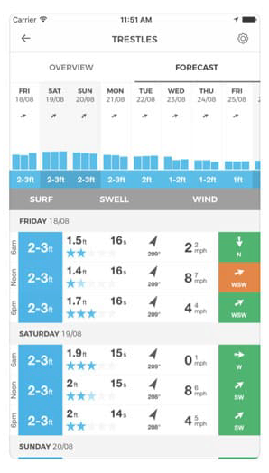
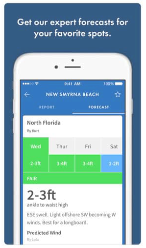
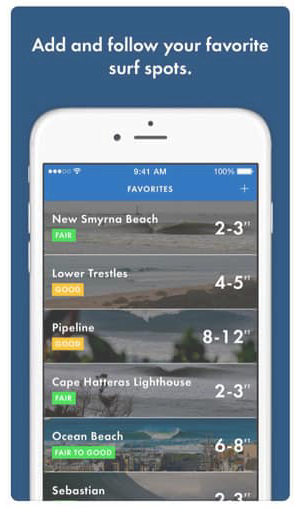

Strengths
- The app is well known being the first of its kind
- Is popular and has a large following
- Its data is used at popular surf events
- Provides coverage for 3,000 beaches in 180 countries
Weaknesses
- Forecasting radius is general to an area
- Nearby spots are general predefined forecasts
- Local/personalized conditions are largely ignored
- No real instructional content to "become a better forecaster" as claimed

Opportunities
- Understanding data is a personal expectation and needs managing
- Provide instruction on reading synoptic charts
- Upgrade the help section, define terminology and explain features
- More accurately display wave height ranges (Refer to the Bureau of Meteorology marine forecasting)
Threats
- Online reviews claim wave data is too general and other apps’ height estimations are more accurate
- Reviews state other forecasting apps allow personalized filtering of preferred conditions/li>
- Live cams on other apps work much better
- The Spot Advisor app has done away with media content by focusing more on connecting users with each other to report and confirm forecasts

Strengths
- Has a loyal following and an extensive history in forecasting
- Impressive UI and intuitive layout
- Values its user's end experience
- Largest selection of live surf cams on the market
- Written reports by forecasters are a plus
Weaknesses
- App relies heavily on the live cam experience (Subscription for HD cams)
- Too many ads on the free version
- Same information as other apps, just presented in a fancier way
- Some controversy exists around Surfline promoting product features with the sole purpose of drawing customers

Opportunities
- Include instructions on how to read the animated wind charts
- Balance between future prediction and real time live cam
- UI is quite intuitive, could use as a design inspiration for Bombora app
Threats
- Reports suggest Surfline’s cams have contributed to increased pollution by drawing large crowds to once pristine beaches and locals have been known to destroy Surfline’s cams to protect them
- Several user reviews suggest using Surfline’s cams in conjunction with other apps for better forecasting accuracy.
- The Lazy Surfer app is making a splash in the market by personalizing the experience with features tailored toward individual condition reports